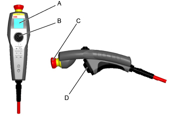

| 欢迎使用 IRC5 | ||
| T10 | ||
| 简介 | T10 是一个通过将设备指向移动方向来直观控制机械手和机械设备的微动控制装置。 在使用 FlexPendant 进行微动控制时，将会选择预订的坐标系统（例如世界坐标或工具坐标），机械手会沿着所选坐标系的预期方向移动。 使用 T10 进行微动控制非常相似，但并非选择坐标系，方向直接体现在设备本身的空间方向上。例如，当进行垂直微动控制时，以垂直方向手持 T10，在进行水平微动控制时，则以水平方向手持 T10。这要归功于内置的惯性测量装置，该装置由加速感应器和陀螺仪组成，会测量设备的空间运动。 摇杆用于调节控制速度以及正反方向。摇杆向前和向后移动直接对应机械手的运动，这非常直观。摇杆的左右移动用于朝向转换。 有关 T10 的详细信息，请参阅 操作员手册 - 带T10的IRC5。 | ||||||||
| 操作前提 | RobotWare 选项976-1 T10 Support是在 IRC5 机器人控制器上运行 T10 所必需的。 | ||||||||
| 概述 | 
|